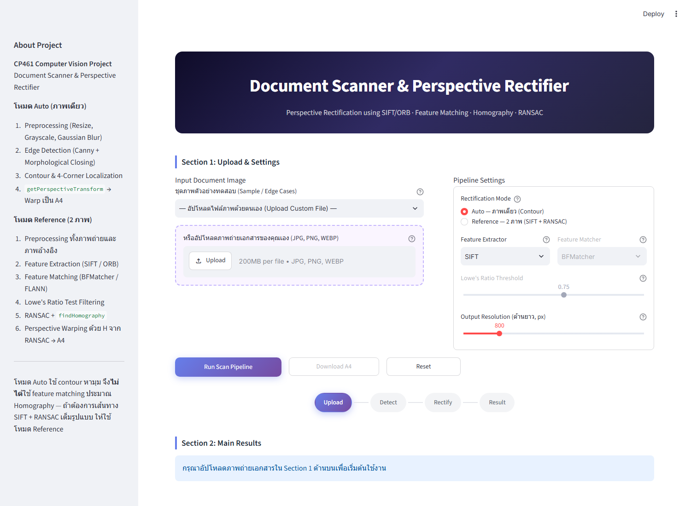
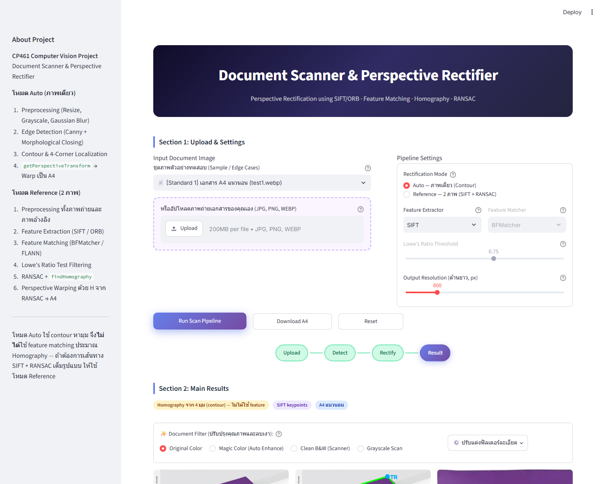
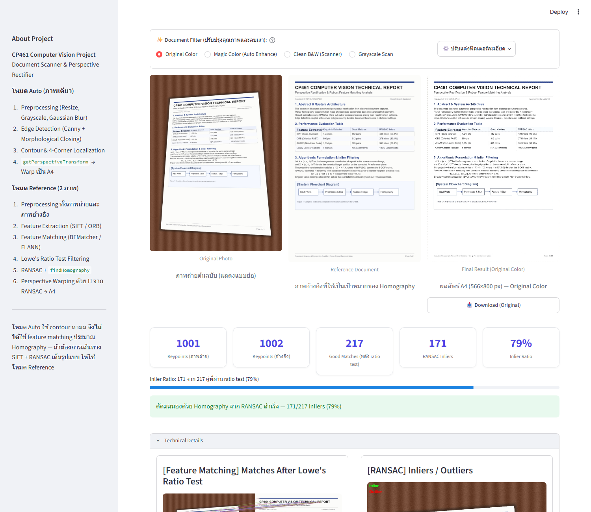
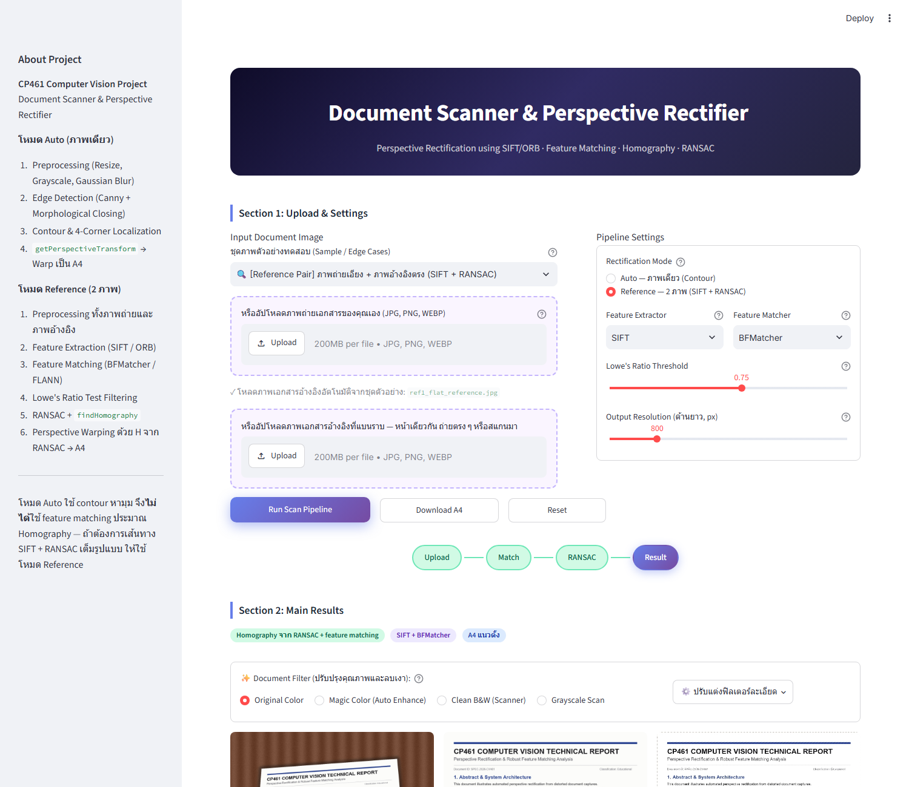
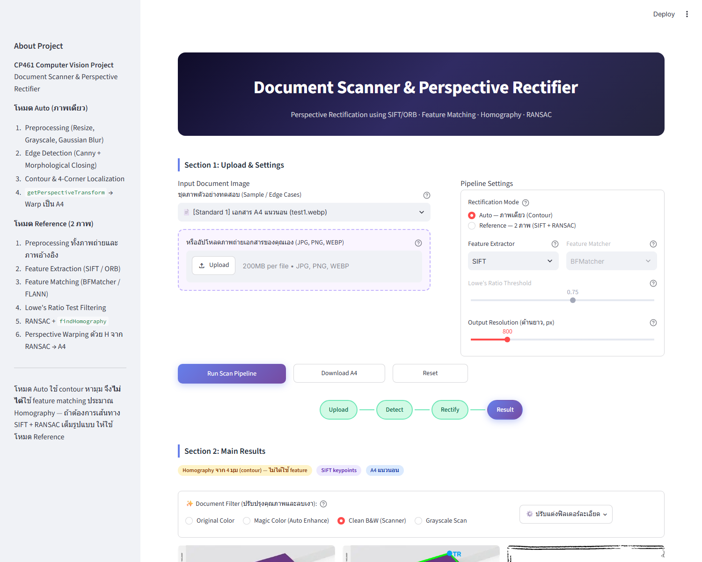
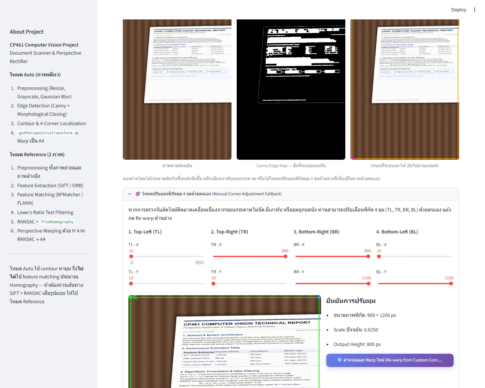
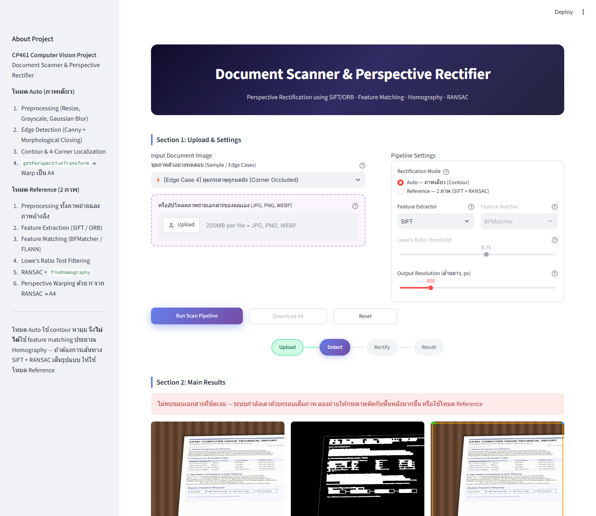

1 ภาพรวมระบบ
สิ่งที่แอปนี้ทำ และวิธีคิดของระบบในหนึ่งย่อหน้า
แอปนี้รับภาพถ่ายเอกสารที่มีมุมมองเอียง (perspective distortion) แล้วแปลงกลับให้เป็นภาพเอกสารมุมตรง สัดส่วนมาตรฐาน A4 (1 : 1.414) เหมือนสแกนจากเครื่องสแกนจริง โดยมี 2 เส้นทาง ในการคำนวณ Homography Matrix (เมทริกซ์การแปลงมุมมอง) ซึ่งแอปบอกผู้ใช้ตรง ๆ เสมอว่ากำลังใช้เส้นทางไหน:
อัปโหลดภาพเดียว → หาขอบกระดาษด้วย Canny Edge + Contour → ได้ 4 มุม →
คำนวณ Homography ตรง ๆ ด้วย cv2.getPerspectiveTransform.
เร็ว เหมาะกับถ่ายเอกสารทั่วไปที่ขอบตัดกับพื้นหลังชัดเจน
อัปโหลด 2 ภาพ: ภาพถ่ายเอียง + ภาพเอกสารหน้าเดียวกันที่แบนราบ → สกัดจุดเด่นด้วย SIFT/ORB → จับคู่ (BFMatcher/FLANN) → กรองด้วย Lowe's Ratio Test → ประมาณ Homography ด้วย RANSAC จริง. เหมาะเมื่อขอบกระดาษไม่ชัดหรือถูกบดบัง
หลังจากได้ภาพ A4 มุมตรงแล้ว ผู้ใช้เลือก ฟิลเตอร์ปรับปรุงคุณภาพ ได้ 4 แบบ (Original / Magic Color / Clean B&W / Grayscale) ก่อนดาวน์โหลดไฟล์ PNG ความละเอียดเต็ม
2 ติดตั้งและรันแอป
-
โคลนโปรเจกต์และเข้าโฟลเดอร์
git clone https://github.com/KrittinB/Document_ScannerAndPerspective_Rectifier.git cd Document_ScannerAndPerspective_Rectifier -
สร้างและเปิดใช้งาน Virtual Environment (แนะนำ)
# Windows python -m venv venv venv\Scripts\activate # macOS / Linux python3 -m venv venv source venv/bin/activate -
ติดตั้ง Dependencies
pip install -r requirements.txtไฟล์นี้ระบุ
opencv-python-headlessเจตนา — อย่าเปลี่ยนกลับไปเป็นopencv-pythonเด็ดขาด เพราะจะพังตอน deploy ขึ้น Streamlit Cloud (ต้องการ libGL ที่ container ไม่มี) -
รันเว็บแอป
เปิดเบราว์เซอร์ไปที่streamlit run app.pyhttp://localhost:8501 -
(ทางเลือก) รันชุดทดสอบอัตโนมัติ เพื่อยืนยันว่าทุกโมดูลทำงานถูกต้องก่อนใช้งานจริง
python -m pytest -q
3 ทัวร์หน้าจอทีละส่วน
หน้าเว็บแบ่งเป็น 3 ส่วนหลัก ไล่จากบนลงล่าง
Section 1 — Upload & Settings

| องค์ประกอบ | ทำหน้าที่อะไร |
|---|---|
| ชุดภาพตัวอย่างทดสอบ (dropdown) | เลือกภาพจาก tests/sample_images/ มาทดสอบทันทีโดยไม่ต้องอัปโหลดเอง มีทั้งภาพมาตรฐาน คู่ภาพ Reference และ Edge Case 5 แบบ |
| Upload (file uploader) | อัปโหลดภาพของตัวเอง (JPG/PNG/WEBP) แทนภาพตัวอย่าง — เรียก utils.bytes_to_numpy_bgr() แปลงไฟล์เป็น numpy array |
| Rectification Mode (radio) | สลับ Auto ↔ Reference — ถ้าเลือก Reference จะโผล่ช่องอัปโหลดภาพอ้างอิงเพิ่มอัตโนมัติ |
| Feature Extractor (SIFT/ORB) | เลือกอัลกอริทึมสกัดจุดเด่น ใช้ทั้งสองโหมด (โหมด Auto ใช้แค่โชว์ผล ไม่ได้เอาไปคำนวณ H) |
| Feature Matcher (BFMatcher/FLANN) | วิธีจับคู่จุดเด่น — ใช้เฉพาะโหมด Reference เท่านั้น (ปิดใช้งานถ้าอยู่โหมด Auto) |
| Lowe's Ratio Threshold (slider 0.50–0.95) | เกณฑ์กรองคู่จุดที่กำกวมออกก่อนเข้า RANSAC — ค่ามาตรฐานคือ 0.70–0.75 |
| Output Resolution (slider 600–1600px) | กำหนดด้านยาวของภาพผลลัพธ์ A4 อีกด้านคำนวณอัตโนมัติจากสัดส่วน 1:1.414 |
| Run Scan Pipeline (ปุ่มหลัก) | เริ่มประมวลผลทั้ง pipeline ตามโหมดที่เลือก |
| Download A4 (ปุ่มบนสุด) | ดาวน์โหลดผลลัพธ์แบบเร็ว — ดูข้อควรระวังในหัวข้อ 11 |
| Reset | ล้างภาพ/ผลลัพธ์/สถานะทั้งหมด กลับไปหน้าเริ่มต้น |
Section 2 — Main Results

แสดงผล 3 ช่องเทียบกัน: ภาพต้นฉบับ → 4 มุมที่ตรวจจับ (Auto) หรือภาพอ้างอิง (Reference) → ผลลัพธ์ A4 พร้อมแถบ badge บอกว่า Homography มาจากไหน (RANSAC / contour / ปรับมือ) และเมตริกตัวเลข (จำนวน keypoints, inliers, ทิศทางเอกสาร ฯลฯ)
Section 3 — Technical Details (expander)

ส่วนนี้เปิด/ปิดได้ (ค่าเริ่มต้นปิด) ใช้เวลาตรวจการบ้าน/นำเสนองาน เพราะโชว์ตัวเลขและภาพประกอบทุกขั้นตอนของอัลกอริทึมจริง ไม่ใช่แค่ผลลัพธ์สุดท้าย
4 โหมด Auto — ทำงานอย่างไร
ไล่ทีละสเต็ปตั้งแต่กดปุ่มจนได้ภาพ A4 พร้อมชี้ว่าแต่ละสเต็ปอยู่ไฟล์ไหน ฟังก์ชันอะไร
| ลำดับ | สิ่งที่เกิดขึ้น | ฟังก์ชัน | ไฟล์ |
|---|---|---|---|
| 1 | ย่อภาพถ้าด้านยาวเกิน 1200px, แปลง grayscale, Gaussian Blur 5×5 ลด noise | preprocess() | src/preprocessing.py |
| 2 | หาขอบด้วย Canny (threshold ปรับอัตโนมัติจาก median ของภาพ) แล้วปิดรอยขาดขอบด้วย morphological closing | detect_edges() | src/detection.py |
| 3 | หา contour ที่ approx ได้ 4 จุด ให้คะแนนตามพื้นที่ × อัตราส่วนใกล้ A4 เลือกตัวคะแนนสูงสุด (ไม่ใช่ตัวแรกที่เจอ) พร้อม fallback 2 ชั้นถ้าหาไม่เจอ | find_document_contour() | src/detection.py |
| 4 | เรียงลำดับ 4 จุดให้เป็น TL, TR, BR, BL เสมอ ด้วยมุมรอบจุดศูนย์ถ่วง (atan2) — ทนต่อกระดาษเอียง 45° | order_corners() | src/detection.py |
| 5 | ตรวจสอบว่า 4 จุดใช้งานได้จริง (ไม่ซ้ำ ไม่เว้า ไม่เล็กเกินไป) ก่อนคำนวณต่อ | validate_quad() | src/detection.py |
| 6 | รวมสเต็ป 2–5 เป็น pipeline เดียว คืนสถานะ success/message ที่ใช้แสดงผลตรง ๆ | detect_document() | src/detection.py |
| 7 | สกัด SIFT/ORB keypoints มาโชว์ประกอบ (ไม่ได้เอาไปคำนวณ H ในโหมดนี้) | extract_features() | src/features.py |
| 8 | คำนวณสัดส่วน/ทิศทาง A4 ผลลัพธ์จาก 4 มุมที่ได้ | get_a4_dimensions(), quad_is_landscape() | src/geometry.py |
| 9 | สร้าง Homography ตรงจาก 4 มุม แล้ว warp ภาพต้นฉบับความละเอียดเต็ม (ไม่ใช่ภาพที่ย่อไว้ตอน detect) เป็น A4 | rectify_from_corners() | src/geometry.py |
5 โหมด Reference — ทำงานอย่างไร
เส้นทางที่ใช้ SIFT/ORB + Feature Matching + RANSAC เต็มรูปแบบ

| ลำดับ | สิ่งที่เกิดขึ้น | ฟังก์ชัน | ไฟล์ |
|---|---|---|---|
| 1 | Preprocess ทั้งภาพถ่ายและภาพอ้างอิงเหมือนกัน (resize/gray/blur) | preprocess() | src/preprocessing.py |
| 2 | สกัด keypoints + descriptors ด้วย SIFT หรือ ORB จากทั้งสองภาพ | extract_features() | src/features.py |
| 3 | จับคู่ descriptors ด้วย BFMatcher (แม่นยำ) หรือ FLANN (เร็วกว่าสำหรับชุดใหญ่) แบบ knnMatch k=2 | match_features() | src/features.py |
| 4 | กรองคู่จุดกำกวมออกด้วย Lowe's Ratio Test ตาม threshold ที่ตั้งไว้ | apply_ratio_test() | src/features.py |
| 5 | รวมสเต็ป 2–4 เป็นฟังก์ชันเดียว คืน keypoints/matches/สถิติทั้งหมด | extract_and_match() | src/features.py |
| 6 | ประมาณ Homography ด้วย RANSAC จริง (threshold 5.0px, confidence 0.995) ตัด outlier ทิ้ง | compute_homography() | src/geometry.py |
| 7 | รวม Homography จาก RANSAC เข้ากับเมทริกซ์ scale ของภาพอ้างอิงและภาพถ่าย แล้ว warp ภาพต้นฉบับความละเอียดเต็มเป็น A4 พร้อมเช็คจำนวน inlier ขั้นต่ำ (≥10) | rectify_from_reference() | src/geometry.py |
ref1_skewed_photo.jpg +
ref1_flat_reference.jpg ได้ 217 good matches หลัง ratio test และ RANSAC เหลือ 171 inliers (79%) — ดัดภาพสำเร็จ6 ฟิลเตอร์ปรับปรุงเอกสาร 4 แบบ
อยู่ใน Section 2 ใต้ผลลัพธ์ A4 — ปรับได้แบบเรียลไทม์ ไม่ต้องรัน pipeline ใหม่

| ฟิลเตอร์ | ทำอะไร | ฟังก์ชันหลัก |
|---|---|---|
| Original Color | ภาพสีต้นฉบับ (ปรับ brightness/contrast เบื้องต้นได้จาก popover ปรับแต่งละเอียด) | apply_filter() เส้นทาง else |
| Magic Color (Auto Enhance) | ลบเงาด้วย Division Normalization → เร่งคอนทราสต์เฉพาะช่อง Luminance ด้วย CLAHE ใน LAB space → ลับคมด้วย Unsharp Masking | enhance_magic_color() (เรียก remove_shadows() ภายใน) |
| Clean B&W (Scanner) | ลบเงาก่อน แล้วทำ Adaptive Gaussian Thresholding แปลงเป็นขาว-ดำคมชัด กรอง noise ด้วย Median Filter | enhance_clean_bw() |
| Grayscale Scan | ลบเงา แปลงเป็นเฉดเทา แล้วขยายช่วง contrast ด้วย CLAHE — เหมาะกับเอกสารลายมือ/ภาพประกอบ | enhance_grayscale() |
ทั้งหมดเรียกผ่านตัวจ่ายงานเดียวคือ apply_filter(image_bgr, filter_mode, brightness, contrast, bw_threshold_c)
ใน src/enhancement.py — ถ้าเกิด exception ระหว่างแต่งภาพ ฟังก์ชันจะดักไว้และคืนภาพต้นฉบับแทนเสมอ ไม่ทำให้แอปพัง
7 ปรับมุม 4 จุดด้วยตนเอง (Manual Corner Adjustment Fallback)
ใช้เมื่อระบบตรวจจับขอบอัตโนมัติพลาด — เช่น มุมถูกบดบัง เงาทับขอบ หรือพื้นหลังกลืนสี

- เลื่อนแถบ TL / TR / BR / BL (แกน X, Y) จนกรอบสีเขียวในพรีวิวล้อมรอบขอบเอกสารพอดี
- กด “🔄 คำนวณและ Warp ใหม่ (Re-warp from Custom Corners)”
- ระบบจะเรียก
order_corners()→validate_quad()→rectify_from_corners()ชุดเดียวกับ pipeline อัตโนมัติ เพียงแต่ใช้พิกัดที่ปรับเอง - ผลลัพธ์จะติด badge สีม่วง “Homography จาก 4 มุมที่ปรับด้วยตนเอง (Manual Fallback)” ให้รู้ว่าไม่ใช่การตรวจจับอัตโนมัติ
ฟังก์ชันเบื้องหลังแผงนี้คือ render_manual_corner_adjustment() ใน app.py — ใช้ได้ทั้งตอนตรวจจับอัตโนมัติล้มเหลว (กางค้างให้อัตโนมัติ)
และตอนอยากปรับละเอียดเพิ่มแม้ตรวจจับสำเร็จแล้วก็ตาม
8 ตารางฟังก์ชันอ้างอิงทั้งหมด
แยกตามไฟล์ใน src/ — ใช้เป็น index เวลาหาว่า “ฟังก์ชันนี้อยู่ไฟล์ไหน ทำอะไร เรียกจากตรงไหนบ้าง”
src/preprocessing.py — เตรียมภาพก่อนประมวลผล
| ฟังก์ชัน | คำอธิบาย |
|---|---|
preprocess(image) | ย่อภาพถ้าด้านยาวเกิน MAX_DIM=1200px, แปลง grayscale, Gaussian Blur 5×5, คืน dict {resized, gray, blurred, scale}. เรียกทุกครั้งก่อนเข้า detection/features ทั้งสองโหมด |
src/detection.py — หาขอบและ 4 มุมเอกสาร
| ฟังก์ชัน | คำอธิบาย |
|---|---|
detect_edges(blurred) | Canny แบบ adaptive threshold (อิง median ± 33%) + morphological closing 5×5 (2 รอบ) เพื่อปิดรอยขาดขอบกระดาษ |
find_document_contour(edges, img_shape) | หา contour ที่ approx ได้ 4 จุด ให้คะแนนจากพื้นที่ × ความใกล้เคียงสัดส่วน A4 เลือกคะแนนสูงสุด มี fallback เป็น minAreaRect แล้ว fallback เป็นกรอบเต็มภาพ (fullframe) ตามลำดับ |
order_corners(pts) | เรียง 4 จุดเป็น [TL, TR, BR, BL] ด้วยมุมรอบจุดศูนย์ถ่วง (atan2) — invariant ต่อลำดับ input และทนต่อกระดาษเอียง 45° (มีเทสยืนยันทั้งสองกรณี) |
validate_quad(corners, img_shape, min_area_ratio=0.03) | ปฏิเสธ quad ที่มีจุดซ้ำ/ใกล้กันเกินไป, ไม่นูน (เว้า/ไขว้), หรือพื้นที่เล็กเกินไป ก่อนส่งไปคำนวณ Homography |
detect_document(blurred, img_shape) | Pipeline หลักของโหมด Auto — รวม 4 ฟังก์ชันด้านบน คืน dict {edges, corners, method, success, message} |
src/features.py — สกัดและจับคู่จุดเด่น
| ฟังก์ชัน | คำอธิบาย |
|---|---|
extract_features(img_gray, method="SIFT") | สกัด keypoints + descriptors ด้วย cv2.SIFT_create หรือ cv2.ORB_create (nfeatures=1000) |
match_features(desc1, desc2, method, matcher) | จับคู่ descriptors ด้วย BFMatcher (NORM_L2 สำหรับ SIFT, NORM_HAMMING สำหรับ ORB) หรือ FLANN (KD-Tree/LSH) แบบ knnMatch k=2 |
apply_ratio_test(raw_matches, ratio=0.75) | Lowe's Ratio Test — เก็บเฉพาะคู่ที่ระยะ best match น้อยกว่า ratio เท่าของ second-best |
extract_and_match(img1_gray, img2_gray, method, matcher, ratio) | รวมฟังก์ชันด้านบนทั้งหมดเป็น pipeline เดียว ใช้ในโหมด Reference |
src/geometry.py — Homography, RANSAC และการ Warp
| ฟังก์ชัน | คำอธิบาย |
|---|---|
get_a4_dimensions(base=800, landscape=False) | คำนวณ (width, height) ตามสัดส่วน A4 = 1:√2 |
quad_is_landscape(corners) | ดูจากความยาวด้านของ quad ว่าเอกสารเป็นแนวนอนหรือแนวตั้ง |
compute_homography(src_pts, dst_pts) | คำนวณ Homography ด้วย RANSAC (threshold 5.0px, confidence 0.995, maxIters 2000) คืน (H, inlier mask) |
corners_to_homography(corners, dst_size) | สร้าง exact 4-point transform จาก 4 มุม → กรอบผลลัพธ์ ด้วย cv2.getPerspectiveTransform |
warp_perspective(image, H, dst_size) | เรียก cv2.warpPerspective (INTER_CUBIC) จริง |
rectify_from_corners(original, corners, scale, a4_base) | เส้นทางโหมด Auto ทั้งหมด: จาก 4 มุม → H → warp ภาพความละเอียดเต็ม → A4 |
rectify_from_reference(photo_original, photo_scale, reference_resized, feature_result, a4_base, min_inliers=10) | เส้นทางโหมด Reference ทั้งหมด: รวม H จาก RANSAC เข้ากับ scale matrix แล้ว warp เป็น A4 พร้อมเช็ค inlier ขั้นต่ำ |
_is_usable(H) internal | กัน Homography ที่ degenerate หรือมี inf/NaN ไม่ให้หลุดไปถึง warp (ป้องกันภาพออกมาดำสนิท) |
src/enhancement.py — ปรับปรุงคุณภาพเอกสารหลัง Rectify
| ฟังก์ชัน | คำอธิบาย |
|---|---|
remove_shadows(image_bgr, kernel_size=35) | ประมาณระนาบแสงพื้นหลังด้วย Dilation+Median Blur แล้วทำ Division Normalization ลบเงา |
enhance_magic_color(...) | ลบเงา → CLAHE บนช่อง L (LAB) → ปรับ brightness/contrast → Unsharp Masking |
enhance_clean_bw(...) | ลบเงา → Adaptive Gaussian Threshold → Median denoise → คืนภาพขาว-ดำ 3 channel |
enhance_grayscale(...) | ลบเงา → แปลงเทา → CLAHE ขยาย contrast |
apply_filter(image_bgr, filter_mode, brightness, contrast, bw_threshold_c) | Router หลักที่ UI เรียกใช้ตรง ๆ ทุกครั้งที่ผู้ใช้สลับฟิลเตอร์หรือลากสไลเดอร์ปรับแต่ง |
src/utils.py — แปลงฟอร์แมตภาพและวาด visualization
| ฟังก์ชัน | คำอธิบาย |
|---|---|
pil_to_numpy_bgr() / numpy_bgr_to_pil() / numpy_gray_to_pil() | แปลงไป-กลับระหว่าง PIL Image (ที่ Streamlit ใช้แสดงผล) กับ numpy BGR/Gray (ที่ OpenCV ใช้ประมวลผล) |
bytes_to_numpy_bgr(file_bytes) | แปลงไฟล์ที่อัปโหลดผ่าน st.file_uploader เป็น numpy array |
draw_corners(image, corners, color, thickness, dot_radius) | วาดกรอบ + จุดมุม TL/TR/BR/BL สีต่างกันบนภาพ (ใช้ทั้งตอนแสดงผลและตอนพรีวิวปรับมุมมือ) |
draw_matches_visualization(...) | วาดเส้นโยงคู่จุดที่ผ่าน ratio test ระหว่างภาพถ่ายกับภาพอ้างอิง |
draw_keypoints(image, keypoints, max_draw=400) | วาด keypoints (วงกลม=scale, เส้น=orientation) สำหรับแผง Feature Extraction ในโหมด Auto |
draw_inlier_outlier(...) | วาดจุด inlier (เขียว)/outlier (แดง) จาก RANSAC mask จริงเท่านั้น — คืน None ถ้าไม่มี mask จริง กันไม่ให้วาดจุดมั่ว |
numpy_to_bytes_png(img) | แปลงภาพเป็น PNG bytes ให้ st.download_button ใช้งาน |
app.py — ฟังก์ชันระดับ UI/orchestration
| ฟังก์ชัน | คำอธิบาย |
|---|---|
_init_state() | ตั้งค่า default ให้ st.session_state ตอนแอปเริ่มทำงานครั้งแรก |
render_stepper(current, steps) | วาดแถบ step indicator ด้านบน (Upload → Detect/Match → Rectify/RANSAC → Result) |
render_manual_corner_adjustment(...) | แผงปรับพิกัด 4 มุมด้วยตนเอง (ดูหัวข้อ 7) |
_metric(col, value, label) | วาด metric card เล็ก ๆ (เช่น จำนวน keypoints, inlier ratio) ใน Section 2 |
9 สคริปต์เสริม (scripts/)
ไม่ใช่ส่วนของเว็บแอป แต่ใช้ช่วยพัฒนา/ตรวจสอบ — รันจาก command line
| ไฟล์ | ใช้ทำอะไร |
|---|---|
scripts/benchmark_pipeline.py | วัด latency ของแต่ละสเต็ปทั้งสองโหมด (preprocess, detect, rectify, feature matching, RANSAC, filters) แล้วพิมพ์รายงาน FPS โดยประมาณ |
scripts/verify_samples.py | รัน pipeline โหมด Auto ไล่ทุกไฟล์ใน tests/sample_images/ (รวม edge cases) แล้วพิมพ์ success/method/message ของแต่ละไฟล์ พร้อมรันโหมด Reference กับคู่ ref1 |
scripts/generate_edge_case_samples.py | สร้างภาพเอกสารจำลอง + Edge Cases (แสงเงา, พื้นหลังรก, มุมบัง ฯลฯ) เอาไว้ทดสอบระบบโดยไม่ต้องถ่ายภาพจริง — ภาพตัวอย่างในสกรีนช็อตของคู่มือนี้ก็มาจากสคริปต์นี้ |
scripts/create_pipeline_demo_notebook.py | สร้าง/คอมไพล์ไฟล์ notebook/pipeline_demo.ipynb ซึ่งเป็นสมุดโค้ดสำรองไว้สาธิต pipeline บน Colab หากเว็บแอปมีปัญหาระหว่างนำเสนอ |
10 แก้ปัญหาเบื้องต้น / Edge Cases

| อาการ | สาเหตุที่เป็นไปได้ | วิธีแก้ |
|---|---|---|
| “ไม่พบขอบใด ๆ ในภาพ” | กระดาษกับพื้นหลังสีใกล้กันเกินไป (low contrast) | ถ่ายใหม่บนพื้นหลังสีตัดกัน หรือใช้โหมด Reference |
| “ไม่พบขอบเอกสารที่ชัดเจน — ระบบกำลังเดาด้วยกรอบเต็มภาพ” | ขอบกระดาษถูกบดบัง/เงาทับ ระบบเดาด้วย full-frame แต่ไม่ถือว่าสำเร็จ | ใช้แผงปรับมุม 4 จุดด้วยตนเอง (หัวข้อ 7) หรือถ่ายให้เห็นมุมครบ 4 มุม |
| “มุมที่ตรวจได้ซ้ำหรือใกล้กันเกินไป” | รูปทรงที่ตรวจเจอเสื่อมสภาพ (degenerate) มุมชิดกันมาก | ปรับมุมด้วยตนเอง หรือถ่ายมุมกล้องให้เห็นกระดาษเต็มแผ่นมากขึ้น |
| “กรอบที่ตรวจได้ไขว้กันเอง (ไม่เป็นรูปสี่เหลี่ยมนูน)” | ลำดับจุดผิดปกติหรือ 3 จุดเกือบอยู่บนเส้นตรงเดียวกัน | ปรับมุมด้วยตนเอง |
| โหมด Reference: “จับคู่จุดเด่นได้เพียง N คู่ (ต้องการอย่างน้อย 4)” | ภาพอ้างอิงกับภาพถ่ายอาจไม่ใช่เอกสารหน้าเดียวกัน หรือภาพเบลอ/ไม่มีลวดลายพอให้ SIFT จับ | ใช้ภาพอ้างอิงที่คมชัด เห็นตัวอักษร/ลวดลายชัดเจน และเป็นเอกสารหน้าเดียวกันจริง |
| โหมด Reference: “RANSAC ได้ inlier เพียง N จุด (ต้องการ ≥ 10)” | คู่จุดที่ผ่าน ratio test ส่วนใหญ่ไม่สอดคล้องกับระนาบเดียวกัน | ลด Lowe's Ratio Threshold ให้เข้มขึ้น (เช่น 0.7) หรือเปลี่ยนภาพอ้างอิง |
11 เคล็ดลับก่อนนำเสนอ / ข้อควรระวัง
notebook/pipeline_demo.ipynb บน Google Colab หรือเครื่อง local แทนได้ทันที ครอบคลุม pipeline ครบทุกขั้นตอน
python -m pytest -q เพื่อยืนยันว่าทั้ง 91 automated tests
ยังผ่านหมด (ครอบคลุม detection, geometry, enhancement, preprocessing, features และ utils) — ถ้ามีใครแก้โค้ดล่าสุดแล้วลืมเทส
จะได้รู้ตัวก่อนขึ้นเวที ไม่ใช่ตอนสาธิตสด
12 คำถามที่พบบ่อย (FAQ)
ทำไมโหมด Auto ถึงไม่มีตัวเลข RANSAC Inliers?
เพราะโหมด Auto ไม่ได้ใช้ RANSAC เลย — Homography มาจาก 4 มุมที่ contour หาได้โดยตรงผ่าน
cv2.getPerspectiveTransform ถ้าอยากเห็นตัวเลข inlier จริงจาก RANSAC ต้องสลับไปโหมด Reference
สกัด SIFT/ORB keypoints ในโหมด Auto ไปทำอะไร ถ้าไม่ได้เอาไปคำนวณ Homography?
โชว์ให้เห็นขั้นตอน Feature Extraction เฉย ๆ (ตามเกณฑ์ต้องสาธิตให้เห็นว่าใช้ SIFT/ORB เป็น) แอปเขียนกำกับไว้ตรง ๆ ใต้ภาพและใน badge ว่าไม่ได้เอาไปใช้ประมาณ H ในโหมดนี้ ถ้าต้องการเห็นเส้นทางที่ feature ถูกใช้จริง ให้ใช้โหมด Reference
เลือก SIFT หรือ ORB ดี?
SIFT แม่นยำและทนทานต่อการหมุน/สเกลมากกว่า เหมาะเป็นค่าเริ่มต้น ส่วน ORB เร็วกว่ามาก เหมาะถ้าต้องประมวลผลจำนวนมากหรือบนเครื่องที่ทรัพยากรจำกัด
เลือก BFMatcher หรือ FLANN ดี? (โหมด Reference)
BFMatcher เทียบทุกคู่ตรง ๆ แม่นยำกว่าเล็กน้อยแต่ช้ากว่าเมื่อ descriptor เยอะ FLANN ใช้โครงสร้างข้อมูลช่วยค้นหาจึงเร็วกว่าสำหรับชุดข้อมูลใหญ่ ผลลัพธ์ในทางปฏิบัติมักใกล้เคียงกัน
ทำไมผลลัพธ์ถึงสลับเป็นแนวนอน/แนวตั้งเอง?
ระบบตรวจสอบสัดส่วนด้านของ 4 มุมที่หาได้ (quad_is_landscape()) แล้วเลือกขนาด A4 แนวนอนหรือแนวตั้งให้อัตโนมัติ
เพื่อไม่ให้เอกสารแนวนอนถูกบีบลงกรอบแนวตั้งจนผิดสัดส่วน
ไฟล์ผลลัพธ์ที่ดาวน์โหลดมา ความละเอียดเท่าไหร่?
Warp มาจากภาพต้นฉบับความละเอียดเต็มเสมอ (ไม่ใช่ภาพที่ถูกย่อไว้ตอน detect ที่ 1200px) ขนาดสุดท้ายกำหนดจากสไลเดอร์ “Output Resolution” คูณสัดส่วน A4 (1:1.414)